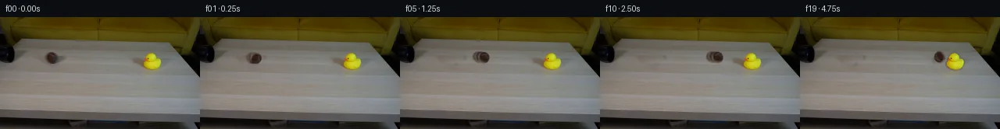

![首帧]()

Round 00
2026-11-04T23:19:53.630739+00:00像素候选变化代码 +280/−0inspection 更新
pixels 8a9caa5d0e8e74b8 · code c539e689c4602cb3
查看本轮 generate.py 真实 diff
--- previous/generate.py
+++ current/generate.py
@@ -0,0 +1,280 @@
+"""PixelWorld case_0008: brown ball rolls out of the black pipe and hits
+the yellow rubber duck.
+
+Method (see METHOD.md for the narrative):
+ * frame 0 is kept byte-identical to first_frame.png;
+ * ball and duck sprites (RGB + analytic/segmented alpha) are extracted
+ from frame 0 with numpy/PIL only;
+ * the table under the ball (+ its native motion smear/shadow) and, for
+ post-impact frames, under the duck, is locally inpainted by row-wise
+ boundary interpolation plus cloned horizontal wood-grain residuals;
+ * the ball is re-composited every frame at a physics-driven x, rotated
+ for rolling, as three sub-exposure stamps (motion blur), with a soft
+ contact shadow;
+ * from frame 14 the duck is re-composited tilted/slid (damped rock).
+No external assets, models or engines are used.
+"""
+from pathlib import Path
+import numpy as np
+from PIL import Image, ImageDraw
+from scipy import ndimage as ndi
+from artifact_io import save as artifact_save
+
+CASE = Path(__file__).parent
+TMP = CASE / '.tmp'
+TMP.mkdir(exist_ok=True)
+
+FRAME0 = np.array(Image.open(CASE / 'first_frame.png').convert('RGB'))
+H, W = FRAME0.shape[:2]
+assert (H, W) == (144, 256)
+
+# ---------------------------------------------------------------- geometry
+BALL_C0 = np.array([64.0, 52.0]) # frame-0 ball centre
+BALL_R = 7.3
+DUCK_PIVOT = np.array([194.2, 66.5]) # rock pivot (base of body)
+CONTACT_X = 176.5 # ball centre at first beak contact
+
+# ball centre x per frame
+X = np.full(20, 179.5)
+X[0] = 64.0
+for t in range(1, 14):
+ X[t] = 64.0 + (CONTACT_X - 64.0) * t / 13.0
+X[13] = CONTACT_X
+X[14] = 178.0
+X[15] = 179.0
+
+# duck response: slide (px) and clockwise tilt (degrees)
+SLIDE = {14: 1.0, 15: 2.2, 16: 2.9, 17: 3.2, 18: 3.3, 19: 3.3}
+TILT = {14: 7.0, 15: 16.0, 16: 11.0, 17: 7.0, 18: 4.5, 19: 3.0}
+
+# ------------------------------------------------------------- sprite tools
+def disk_alpha(h, w, cy, cx, r):
+ """Anti-aliased circular coverage alpha."""
+ yy, xx = np.mgrid[0:h, 0:w].astype(np.float32)
+ d = np.sqrt((xx - cx) ** 2 + (yy - cy) ** 2)
+ return np.clip(r + 0.5 - d, 0.0, 1.0)
+
+def ellipse_alpha(shape, cy, cx, ry, rx):
+ yy, xx = np.mgrid[0:shape[0], 0:shape[1]].astype(np.float32)
+ d = np.sqrt(((xx - cx) / rx) ** 2 + ((yy - cy) / ry) ** 2)
+ return np.clip(1.0 - d, 0.0, 1.0) ** 1.6
+
+def ball_sprite():
+ """18x18 RGBA ball sprite centred at index 9,9 (= image (64,52))."""
+ x0, y0 = 55, 43
+ crop = FRAME0[y0:y0 + 18, x0:x0 + 18].astype(np.float32)
+ a = disk_alpha(18, 18, 9, 9, BALL_R)
+ sp = np.dstack([crop, a * 255]).astype(np.uint8)
+ return Image.fromarray(sp, 'RGBA')
+
+def duck_sprite():
+ """Segment the duck (yellow body + orange beak), fill the eye hole,
+ feather a 1px rim; return RGBA crop and pivot coords inside it."""
+ f = FRAME0.astype(np.int32)
+ R, G, B = f[..., 0], f[..., 1], f[..., 2]
+ roi = np.zeros((H, W), bool)
+ roi[44:70, 182:210] = True
+ yellow = (R > 140) & (G > 110) & (B < 90) & ((R - B) > 55) & roi
+ orange = (R > 140) & (G > 50) & (G < 120) & (B < 50) & ((R - G) > 30) & roi
+ m = ndi.binary_fill_holes(yellow | orange)
+ m = ndi.binary_dilation(m, iterations=1) | m
+ alpha = np.zeros((H, W), np.float32)
+ alpha[m] = 1.0
+ # soften the outermost rim
+ alpha = ndi.gaussian_filter(alpha, 0.6)
+ alpha = np.clip(alpha, 0, 1)
+ ys, xs = np.where(alpha > 0.02)
+ x0, x1, y0, y1 = xs.min(), xs.max() + 1, ys.min(), ys.max() + 1
… diff truncated; 193 more lines …